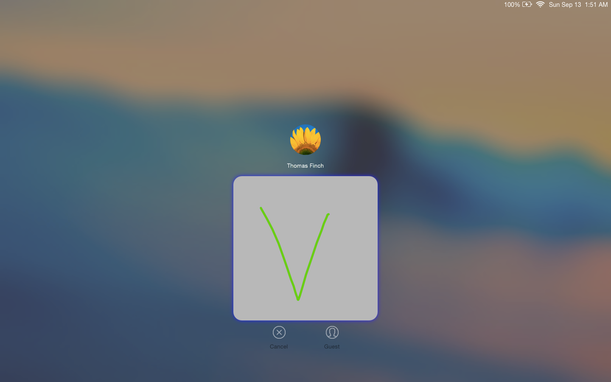
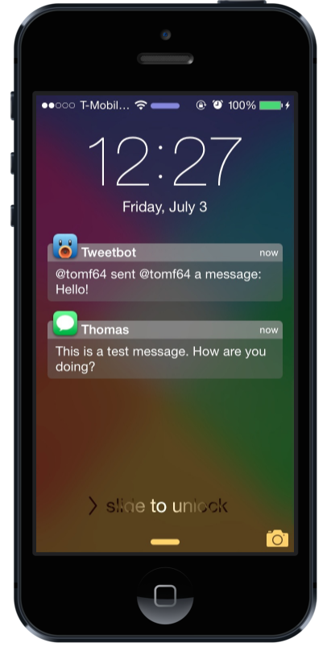

Gesture Unlock for Mac
Gesture Unlock is a hackathon project created at MHacks 6 in September 2015. It allows you to unlock your Mac by drawing a picture password using your mouse or trackpad rather than entering a password. It uses the $1 gesture recognition algorithm for determining whether the shape is correct or not.



WatchNotifications
WatchNotifications brings Apple Watch style notifications to the iOS lock screen. It combines the traditional banner style of iOS with the clean style of WatchOS to give the lock screen a fresh look.

Priority Hub
Priority Hub organizes lockscreen notifications by app to give a quick overview of recent notifications. It also allows pulling down on the notifications list to clear the notifications for the selected app from the lock screen. Over 70,000 downloads to date!

Axle
Designed by Newar Choukeir, the prolific iOS designer and founder of A3Tweaks, Axle brings useful new features to the iOS 6 app switcher. It adds circular sliders for volume and brightness as well as a brand-new toggles page to the left of the music controls for quickly changing common settings.

NCWeather
NCWeather is a minimalistic weather widget for iOS 7 and 8. Apple got rid of the built-in weather widget with iOS 7, but NCWeather is the replacement! Tapping on the widget switches between current conditions, hourly weather, and weekly forecast views.


ClassicSwitcher
ClassicSwitcher brings the classic bar-style app switcher to iOS 7. It's packed with great features like multiple rows, a function to quit all apps, an always editing mode, and multiple overlay styles and opening animations.

Flappy Bird Wii
Flappy Bird Wii is a Wii homebrew application that replicates the popular iOS game Flappy Bird. It's not complete, with only the flapping physics implemented (arguably the best part of the game anyway 😄). Though it's not very complicated I had a lot of fun making it. You can see a video of it in action here.
Dim
Dim is a jailbreak tweak that allows you to artificially dim the screen of your iOS device below the normal minimum brightness. It's very flexible, with tons of ways to enable and disable it as well as change the brightness, including Activator actions, a Flipswitch toggle, a pop-up control panel, and the tweak's preference pane.
Favebot
Favebot allows Tweetbot 3 to display users who favorited a tweet natively. Normally, Tweetbot can't do this because of restrictions in the Twitter API, but Favebot fixes this and allows you to see the full list of favoriters!